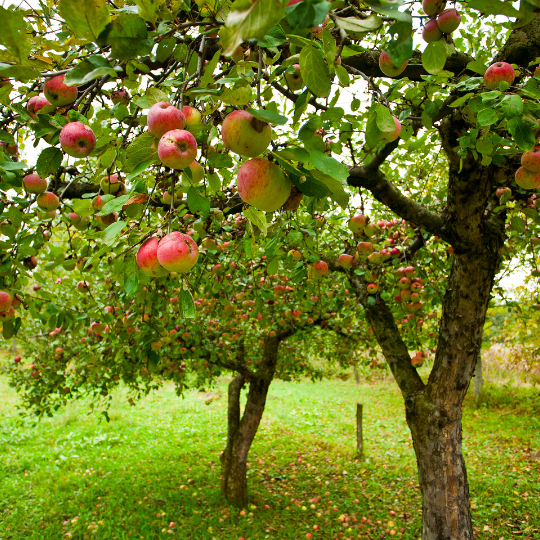

Krytosemenné rostliny
V čem jsou specialní?
Krytosemenné rostliny jsou zvláštní tím, že vytvářejí květy a semena uzavřená v plodech, na rozdíl od nahosemenných. Patří sem většina dnešních rostlin, například ovocné stromy, byliny a keře. Velikost krytosemenných rostlin je velmi různorodá – mohou být malé byliny jen několik centimetrů vysoké nebo obrovské stromy dosahující desítek metrů. Mají různorodé listy, často ploché a široké, přizpůsobené fotosyntéze a prostředí, ve kterém rostou. Rozmnožují se semínky, která vznikají v plodech po opylení květů, a semena jsou často rozšiřována větrem, vodou nebo živočichy. Některé druhy se mohou rozmnožovat i vegetativně, například oddenky, hlízy nebo řízky. Krytosemenné rostliny jsou ekologicky i ekonomicky velmi významné, poskytují potravu, dřevo, léky a tvoří většinu rostlinné biomasy na Zemi.
Příklad krytosemenné rostliny
Jabloň domácí
Jabloň domácí (Malus domestica) je krytosemenná rostlina, která patří mezi ovocné stromy. Dorůstá obvykle 3 až 8 metrů a tvoří širokou korunu s plochými zelenými listy. Kvete bílorůžovými květy, po opylení vznikají plody – jablka, která obsahují semena. Roste nejlépe na slunných místech s propustnou půdou. Semena jabloně jsou rozšiřována větrem, vodou nebo živočichy. Jabloň je ekonomicky významná rostlina, protože poskytuje jedlé plody. Kromě jabloně patří mezi krytosemenné rostliny také růže, pšenice, slunečnice nebo dub.
